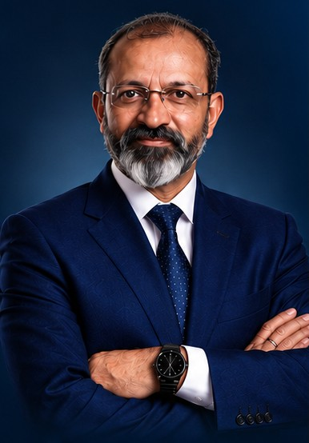

Organisational Development & Business Transformation Partner
Turning business challenges into sustainable performance
Helping businesses move from reactive problem-solving to disciplined, sustainable performance.
- People
- Process
- Performance
- Financial Discipline
- Governance

- 01Diagnose.
- 02Redesign.
- 03Execute.
- 04Measure.
Businesses rarely struggle because of one isolated problem.
- Growth may slow.
- Margins may decline.
- Processes become inefficient.
- People work hard but outcomes remain inconsistent.
- Systems get implemented without fixing the underlying process.
- Decisions become reactive instead of strategic.
ProfKons diagnoses organisational and business problems, aligns people and processes, strengthens systems and governance, and drives measurable execution and transformation.
We don’t believe in quick fixes.
We believe in identifying the root cause, redesigning the process, implementing with discipline and measuring the outcome.

Experience that goes beyond advice
Abhay Maheshwari
Founder & Principal Consultant
Organisational Development & Business Transformation Partner | Independent Director
IICA Certified Independent DirectorMinistry of Corporate Affairs, Govt. of India
ProfKons brings together 35+ years of multidisciplinary global business experience across business development, sales & marketing, plant operations, supply chain, human resources, projects, process improvement, business transformation and strategic management.
Experience across industries
- Automobile
- Rigid PVC
- Bicycles
- Stationery
- FMCG
- OTC Products
- Pharma
- MS Pipes & Steel
- Chemicals Trading
- Fabrication & Galvanizing
- Biomass
- PE Hygiene Films
- Renewable Energy
- Consultancy
This breadth enables us to recognise common business challenges while respecting the unique economics and operating realities of each business.
Our approach is grounded in practical business realities, not theoretical recommendations. We work with promoters, business leaders and management teams to address challenges at their root and build systems that can sustain performance.
Our philosophy
From quick gains to long-term value creation
Sustainable profitability is not created by one isolated initiative. It comes from balancing:
- Market Opportunity
- Operational Capability
- Financial Discipline
- People
- Governance
When these five dimensions work together, businesses become more resilient, efficient and capable of creating enduring value.
What we help businesses achieve
Business Transformation
Transform fragmented operations into structured, measurable and scalable businesses.
Operational Excellence
Improve productivity, processes, resource utilisation and execution discipline.
Organisational Development
Build clearer roles, stronger systems, accountable teams and performance-oriented cultures.
Strategic Management
Convert business objectives into practical strategies, priorities and execution roadmaps.
Profitability Improvement
Identify leakage, inefficiencies and structural issues affecting margins and cash generation.
Digital & Process Transformation
Ensure ERP, technology and digital initiatives improve the business rather than simply digitising existing inefficiencies.
A bad process digitised is still a bad process.
Our approach
Five stages that take a business from understanding the problem to improvements that last.
-
01Diagnose
Understand the business, identify symptoms and uncover the root causes.
-
02Redesign
Challenge existing processes, structures and practices and create practical alternatives.
-
03Implement
Translate recommendations into action with ownership, timelines and measurable outcomes.
-
04Measure
Track performance, identify gaps and continuously improve.
-
05Sustain
Build systems and accountability mechanisms that allow improvements to continue beyond the consulting engagement.
Why ProfKons?
More about ProfKonsPractical Business Experience
Advice shaped by decades of hands-on exposure across multiple functions and industries.
Cross-Functional Perspective
We connect strategy, people, processes, operations, finance and governance instead of treating them as isolated functions.
Root-Cause Orientation
We look beyond symptoms to understand why the problem exists.
Execution Focus
A recommendation has little value unless it can be implemented.
Sustainable Thinking
Our objective is not a temporary improvement but a stronger business model and operating system.
Stakeholder Perspective
We consider the interests of promoters, management, employees, customers, suppliers and other stakeholders while working toward business objectives.
Credentials
35+ years of multidisciplinary global business experience
In just the last 10 months
Business transformation is not about doing more.
It is about doing the right things: better, consistently and measurably.
- Identify the root cause.
- Redesign the process.
- Implement it.
- Measure the outcome.
Let’s start with a conversation.
Talk to ProfKons